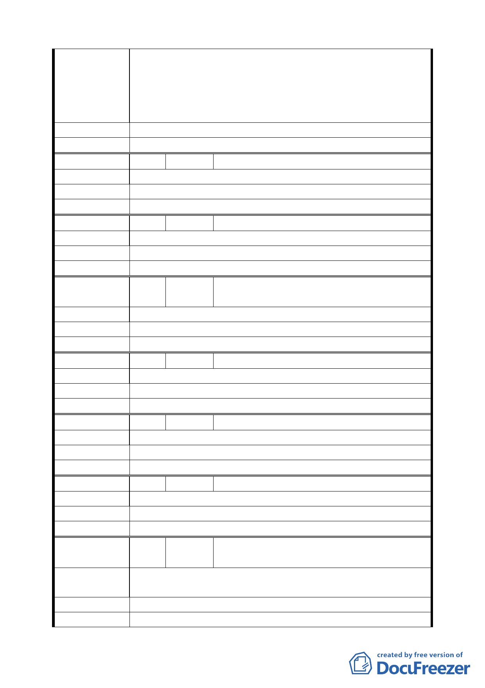

聽取真實的聲音也望請 貴委員會專家學者能正視本區里民
的真正民意，以您專業的角度做客觀評比與建議且符合在地
民眾所需。亦請 葉副市長金川先生實地瞭解民情輿論避免
僅聽取承辦單位片面之詞而引起民怨造成遺憾，相信 葉副
市長的睿智能解決雙方的癥結問題，以保障民眾之權益。
建 議 辦 法 不同意捷運聯合開發計畫案，不參與該開發案。
委 員 會 決 議 同編號 1。
編 號 26 陳情人
陳 情 理 由 不同意。
建 議 辦 法 不同意。
委 員 會 決 議 同編號 1。
吳碧雲（民權西路 245 巷 3 號 2 樓）
編 號 27 陳情人
陳 情 理 由 不同意。
建 議 辦 法 不同意。
委 員 會 決 議 同編號 1。
江粉（民權西路 245 巷 5 號）
編 號 28 陳情人
陳 情 理 由 不同意。
建 議 辦 法 不同意。
委 員 會 決 議 同編號 1。
鄭婷文、楊玉秀（民權西路 245 巷 7 號 1
樓）
編 號 29 陳情人
陳 情 理 由 不同意。
建 議 辦 法 不同意。
委 員 會 決 議 同編號 1。
郭再興（民權西路 245 巷 7 號 2、3 樓）
編 號 30 陳情人
陳 情 理 由 不同意。
建 議 辦 法 不同意。
委 員 會 決 議 同編號 1。
陳李花（民權西路 245 巷 9 號）
編 號 31 陳情人
陳 情 理 由 不同意。
建 議 辦 法 不同意。
委 員 會 決 議 同編號 1。
郭許玉英（民權西路 245 巷 15 號）
編
號 32
陳情人
游惠美（民權西路 245 巷 23 號 4 樓、25 號
1、4 樓）
陳
情
理
由
新莊線大橋國小站聯開基地（西側）權益分配，地主分配比
例太少。
建 議 辦 法 重新分配。
委 員 會 決 議 同編號 1。
一五